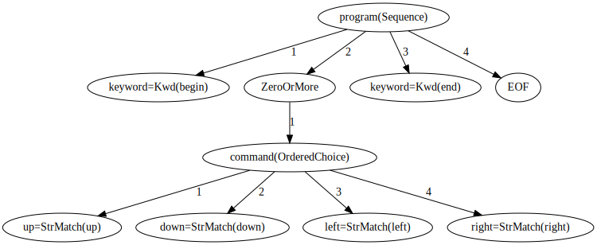
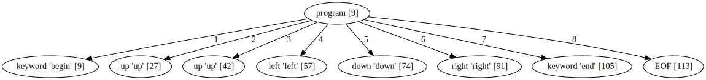
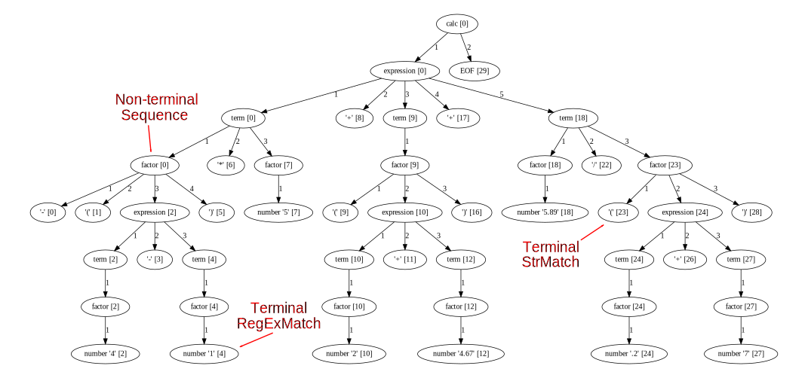
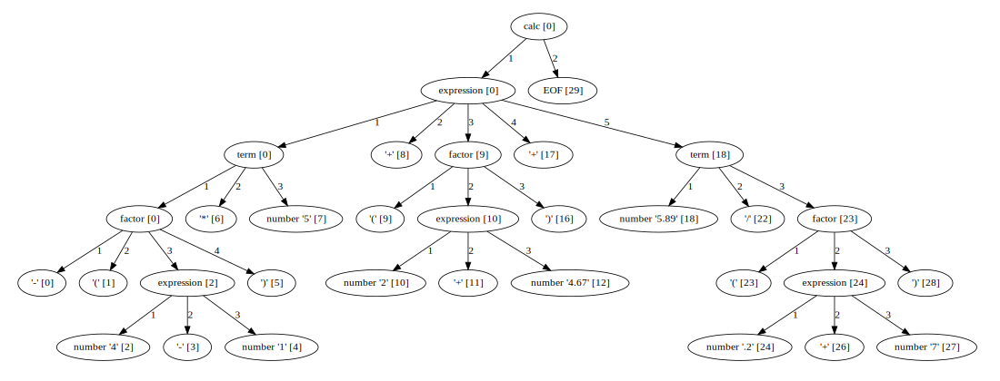
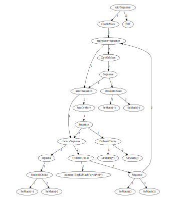

Arpeggio parser
Prof. dr Igor Dejanović (igord at uns ac rs)
Kreirano 2023-01-16 Mon 18:17, pritisni ESC za mapu, m za meni, Ctrl+Shift+F za pretragu
Sadržaj
1. PyParsing
1.1. PyParsing
- 100% Python
- MIT licenca
- PEG parser
- Gramatika se zadaje Python izrazima preko redefinisanih operatora
+i| - Mane
- Slabija podrška za semantičku analizu
- Referenciranje pravila unapred -
Forward - Nije moguće definisati gramatiku putem PEG notacije
- http://pyparsing.wikispaces.com/
1.2. Primer
from pyparsing import Word, alphas
greet = Word( alphas ) + "," + Word( alphas ) + "!" # <-- grammar
hello = "Hello, World!"
print (hello, "->", greet.parseString( hello ))
Hello, World! -> ['Hello', ',', 'World', '!']
1.3. parsimonious
- 100% Python
- https://github.com/erikrose/parsimonious
- PEG (packrat) parser
- MIT licenca
- Cilj - performanse
- Gramatika se zadaje tekstualnim jezikom.
- Whitespace karakteri se zadaju gramatikom.
1.4. Primer
>>> from parsimonious.grammar import Grammar
>>> grammar = Grammar(
... """
... bold_text = bold_open text bold_close
... text = ~"[A-Z 0-9]*"i
... bold_open = "(("
... bold_close = "))"
... """)
>>> print grammar.parse('((bold stuff))')
<Node called "bold_text" matching "((bold stuff))">
<Node called "bold_open" matching "((">
<RegexNode called "text" matching "bold stuff">
<Node called "bold_close" matching "))">
1.5. PLY
- 100% Python
- LR parser
- Inspirisan sa lex/yacc alatima
- Pravila prioriteta, oporavak od grešaka, podrška za neodređene gramatike.
- Tokenizacija kao poseban korak (lex modul)
- Gramatika se piše u docstring-ovima za semantičke akcije.
1.6. Primer
# When parsing starts, try to make a "chemical_equation" because it's
# the name on left-hand side of the first p_* function definition.
def p_species_list(p):
"chemical_equation : chemical_equation species"
p[0] = p[1] + [p[2]]
def p_species(p):
"chemical_equation : species"
p[0] = [p[1]]
2. Arpeggio
2.1. Osnovne osobine
- 100% Python kod
- MIT licenca
- Definisanje gramatike putem Python izraza ili putem PEG notacije
- Puna podrška za semantičku analizu
- Dobra podrška za debagovanje
- Vizualizacija stabla parsiranja i modela parsera upotrebom
GraphVizbiblioteke. - Dobra prijava grešaka
- Mogućnost višestruke analize istog stabla parsiranja
- https://github.com/textX/Arpeggio

2.2. PEG pravila
- Gramatika se zadaje skupom PEG pravila
- Svako pravilo definiše način prepoznavanja određenog (ne)terminala na ulazu.
Ako su e, e1 i e2 PEG pravila definisani su sledeći elementarni PEG
izrazi:
- Sekvenca:
e1 e2- izraz će dovesti do prepoznavanja ulaza ako i samo ako redom izrazie1ie2prepoznaju ulaz - Uređeni izbor:
e1 / e2- izraz će biti prepoznat ukoliko bilo izraze1ili izraze2dovedu do prepoznavanja u navedenom redosledu (prvoe1pa zatime2) - Jedan ili više:
e+- sukcesivno se vrši prepoznavanje izrazaedok god uspeva. Ukoliko jeeprepoznat bar jednom prepoznavanje je uspešno - Nula ili više:
e*- sukcesivno se vrši prepoznavanje izrazaedok god uspeva. Izraz uvek uspeva pri čemu ako izrazenije prepoznat ni jednom rezultat je prazan string, - Opciono:
e?- izraz uvek uspeva. Ukoliko se prepozna string sa ulaza biće konzumiran.
2.3. PEG pravila - predikati
Predikati su pravila koja prepoznaju string sa ulaza ali ga ne konzumiraju.
- “I” predikat:
&e- pravilo je uspešno samo ukoliko jeeprepoznato na ulazu. - “Ne” predikat:
!e- pravilo je uspešno samo ukolikoenije prepoznato na ulazu.
2.4. Koncepti
- Parser model - opisuje određenu vrstu dijagrama stanja-prelaza parsera. Može se vizualizovati upotrebom dot alata u cilju debagovanja.
- Stablo parsiranja - može se vizualizovati dot alatom
- Semantičke akcije - transformišu stablo parsiranja u drugi oblik upotrebom Visitor obrasca.
2.5. Definisanje gramatike - interni DSL
def program(): return Kwd('begin'), ZeroOrMore(command),
Kwd('end'), EOF
def command(): return [up, down, left, right]
def up(): return 'up'
def down(): return 'down'
def left(): return 'left'
def right(): return 'right'
begin up up left down right end
- Gramatička pravila → Python funkcije
- Sekvenca → n-torka (tuple)
- Uređeni izbor → Python lista
- Ostalo → instance klasa (npr.
ZeroOrMore, OneOrMore, Optional) - Navedena gramatika prepoznaje ulaz dat na desnoj strani.
2.6. Definisanje gramatike - eksterni DSL
program = 'begin' command* 'end' EOF command = UP/DOWN/LEFT/RIGHT UP = 'up' DOWN = 'down' LEFT = 'left' RIGHT = 'right'
2.7. Instanciranje parsera
from arpeggio import ParserPython
def program():...
parser = ParserPython(program)
# Ili za eksternu PEG notaciju
from arpeggio.cleanpeg import ParserPEG
parser = ParserPEG(grammar)
# gde je grammar gramatika u PEG notaciji
2.8. Model parsera

from arpeggio import ParserPython
...
parser = ParserPython(robot, debug=True)
2.9. Stablo parsiranja
prog_src = """
begin
up
up
left
down
right
end
"""
parse_tree = parser.parse(prog_src)

Elementi stabla su terminali i neterminali.
2.10. Terminali (Terminal nodes)
- Kreiraju se pravilima koje nasleđuju
Matchpravilo. Mogu se konvertovati u string predstavu pozivomstrfunkcije. - Trenutno postoje dve
Matchnaslednice:StrMatchiRegExMatch.
2.11. Ne-terminali (Non-terminal nodes)
- Kreiraju se svim ostalim pravilima:
Sequence,OrderedChoice,ZeroOrMoreitd. - Nasleđuju
listtako da se mogu koristiti u svim kontekstima gde se može koristiti i lista.
2.12. Stablo parsiranja aritmetičkog izraza

2.13. Informacije sadržane u čvorovima stabla parsiranja
Svaki čvor stabla je objekat koji poseduje sledeće atribute:
rule- veze premaParsingExpressionnaslednici iz modela parsera, odnosno pravilo koje je prepoznalo ovaj element u ulaznom stringu,rule_name- ime pravilaposition- apsolutna pozicija unutar ulaznog stringa od početka.
Red i kolona se može dobiti preko parsera na sledeći način:
line, col = parser.pos_to_linecol(node.position)
2.14. Navigacija
Ne-terminali nasleđuju
listtako da se mogu koristiti u svim kontekstima gde se može koristiti i lista.- Indeksni pristup:
child = pt_node[2]- Iteracija:
for child in pt_node: ...
Dodatno se child elementima može pristupati i po nazivu pravila:
# Grammar
def foo(): return "a", bar, "b", baz, "c", ZeroOrMore(bar)
def bar(): return "bar"
def baz(): return "baz"
# Parsing
parser = ParserPython(foo)
result = parser.parse("a bar b baz c bar bar bar")
# Accessing parse tree nodes. All asserts will pass.
# Index access
assert result[1].rule_name == 'bar'
# Access by rule name
assert result.bar.rule_name == 'bar'
# There are 8 children nodes of the root 'result' node.
# Each child is a terminal in this case.
assert len(result) == 8
# There is 4 bar matched from result (at the beginning and from ZeroOrMore)
# Dot access collect all NTs from the given path
assert len(result.bar) == 4
# You could call dot access recursively, e.g. result.bar.baz if the
# rule bar called baz. In that case all bars would be collected from
# the root and for each bar all baz will be collected.
# Verify position
# First 'bar' is at position 2 and second is at position 14
assert result.bar[0].position == 2
assert result.bar[1].position == 14
3. Konfiguracija parsera
3.1. Osetljivost na veličinu slova (Case-sensitivity)
- Parser je podrazumevano osetljiv na veličinu slova.
- Da se ovo promeni:
parser = ParserPython(calc, ignore_case=True)
3.2. Upravljanje “praznim” karakterima (Whitespaces)
- Arpeggio podrazumevano preskače prazne karaktere.
Da bi se ovo promenilo:
parser = ParserPython(calc, skipws=False)Pod praznim karakterima podrazumevaju se
\n\t\rispace. Ovo se može promeniti parametromwspri konstrukciji:parser = ParserPython(calc, ws='\t\r ')Ovo se može koristiti i na nivou sekvence:
def grammar(): return Sequence("one", "two", "three", skipws=False), "four" parser = ParserPython(grammar) pt = parser.parse('onetwothree four')
3.3. Ključne reči
Ukoliko se uključi parametar autokwd tada će prepoznavanje svega što je oblika
ključne reči biti sa uzimanjem u obzir granice reči (word boundary) odnosno
ključne reči u sklopu većih reči neće biti prepoznate kao takve.
Primer:
def grammar(): return "one", "two", "three"
parser = ParserPython(grammar, autokwd=True)
# If autokwd is enabled this should parse without error.
parser.parse("one two three")
# But this will not parse as the match is done using word boundaries
# so this is considered a one word.
parser.parse("onetwothree")
3.4. Komentari
Arpeggio može opciono da primi i gramatiku za komentare. Ova gramatika će se koristiti između svaka dva elementarna prepoznavanja osnovne gramatike (slično kao za prazne karaktere).
# Grammar
def simpleLanguage(): return function
def parameterlist(): return "(", symbol, ZeroOrMore(",", symbol), ")"
def functioncall(): return symbol, "(", expressionlist, ")"
def function(): return Kwd("function"), symbol, parameterlist, block
...
def comment(): return [_("//.*"), _("/\*.*\*/")]
parser = ParserPython(simpleLanguage, comment)
3.5. Redukcija stabala parsiranja
Kod “dubokih” gramatika često imamo pojavu ne-terminala sa samo jednim podčvorom. Zbog jednostavnosti analize nekada je poželjno eliminisati takve čvorove iz stabla.
parser = ParserPython(calc, reduce_tree=True)

3.6. Parsiranje do kraja linije
Nekada je potrebno da pravila koja nasleđuju Repetition (ZeroOrMore i
OneOrMore) vrše parsiranje samo do kraja linije.
def grammar(): return first, second
def first(): return ZeroOrMore(["a", "b"], eolterm=True)
def second(): return "a"
# first rule should match only first line
# so that second rule will match "a" on the new line
input = """a a b a b b
a"""
parser = ParserPython(grammar)
result = parser.parse(input)
4. Debagovanje i vizualizacija
4.1. Debagovanje (Debugging)
Arpeggio se može postaviti da radi u režimu za debagovanje.
parser = ParserPython(calc, debug=True)
>> Entering rule calc=Sequence at position 0 => *-(4-1)*5+(
>> Entering rule OneOrMore in calc at position 0 => *-(4-1)*5+(
>> Entering rule expression=Sequence in calc at position 0 => *-(4-1)*5+(
>> Entering rule term=Sequence in expression at position 0 => *-(4-1)*5+(
>> Entering rule factor=Sequence in term at position 0 => *-(4-1)*5+(
>> Entering rule Optional in factor at position 0 => *-(4-1)*5+(
>> Entering rule OrderedChoice in factor at position 0 => *-(4-1)*5+(
>> Match rule StrMatch(+) in factor at position 0 => *-(4-1)*5+(
-- No match '+' at 0 => '*-*(4-1)*5+('
>> Match rule StrMatch(-) in factor at position 0 => *-(4-1)*5+(
++ Match '-' at 0 => '*-*(4-1)*5+('
<< Leaving rule OrderedChoice
<< Leaving rule Optional
>> Entering rule OrderedChoice in factor at position 1 => -*(4-1)*5+(2
4.2. Vizualizacija
- U režimu za debagovanje kreiraju se
dotfajlovi i za model parsera i za stablo parsiranja (ako nema sintaksnih grešaka). Koristimo
dotalat (deo GraphViz alata) za konverziju u grafičke formate.$ dot -Tpng -O calc_parser_model.dot
- Možemo direktno koristiti i
dotčitače, npr. xdot.
4.3. Obrada grešaka pri parsiranju
parser = ParserPython(calc)
# 'r' in the following expression can't be recognized by
# calc grammar
input_expr = "23+4/r-89"
parse_tree = parser.parse(input_expr)
Traceback (most recent call last):
...
arpeggio.NoMatch: Expected '+' or '-' or 'number' or
'(' at position (1, 6) => '23+4/*r-89'.
NoMatchizuzetak.rules- lista pravila (iz modela parsera) koja su pokušana na datom mestu.position- apsolutna pozicija od početka fajlaline,col- red i kolonaparser- referenca na parser objekat
5. Analiza stabala parsiranja
5.1. Semantičke akcije - transformacija u AST
from arpeggio ParserPython, visit_parse_tree
parser = ParserPython(calc)
input_expr = "-(4-1)*5+(2+4.67)+5.89/(.2+7)"
parse_tree = parser.parse(input_expr)
result = visit_parse_tree(parse_tree, CalcVisitor())
class CalcVisitor(PTNodeVisitor):
def visit_number(self, node, children):
"""
Converts node value to float.
"""
if self.debug:
print("Converting {}.".format(node.value))
return float(node.value)
def visit_factor(self, node, children):
"""
Applies a sign to the expression or number.
"""
if self.debug:
print("Factor {}".format(children))
if len(children) == 1:
return children[0]
sign = -1 if children[0] == '-' else 1
return sign * children[-1]
5.2. SemanticActionResults
- Klasa čija instanca se dobija kao
childrenparametar u akcijama. - Enkapsulira rezultate vraćene od akcija nižeg nivoa.
- Nasleđuje Python listu.
def visit_bar(self, node, children):
# Index access
child = children[2]
# Iteration
for child in children:
...
# Rule name lookup
# Returns a list of all rules created by PEG rule 'baz'
baz_created = children['baz']
5.3. Postprocesiranje u drugom pozivu
- Nekada se konstrukcija AST-a mora obaviti u dva prolaza (npr. razrešavanje referenci).
- Opciona metoda oblika
second_<rule_name>. Dobija objekat koji vraća pozivvisit_<rule_name>i dodatno ga obrađuje.
5.4. Podrazumevane semantičke akcije
- Ako nije definisana metoda
visit_<rule_name>Arpeggio će primeniti podrazumevanu akciju čija logika je sledeća:- Ako je čvor kreiran
StrMatchpravilom (string literal) vraća seNonečime se čvor eliminiše izchildrenkolekcije čvora višeg nivoa. - Ako je kreiran sa
RegExMatchbiće vraćen string. - Ako je čvor ne-terminal sa samo jednim podčvorom biće vraćen podčvor.
- Ako je čvor kreiran
Podrazumevane akcije se mogu isključiti parametrom
defaults:result = visit_parse_tree(parse_tree, CalcVisitor(defaults=False))Podrazumevane akcije se mogu eksplicitno pozvati:
def visitor_myrule(self, node, children): if some_condition: ... else: return super(MyVisitor, self).visit__default__(node, children)